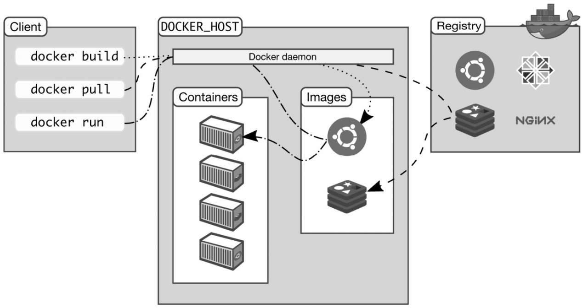
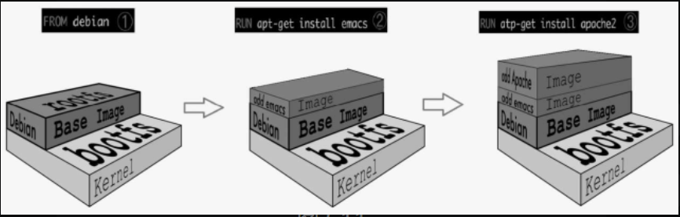
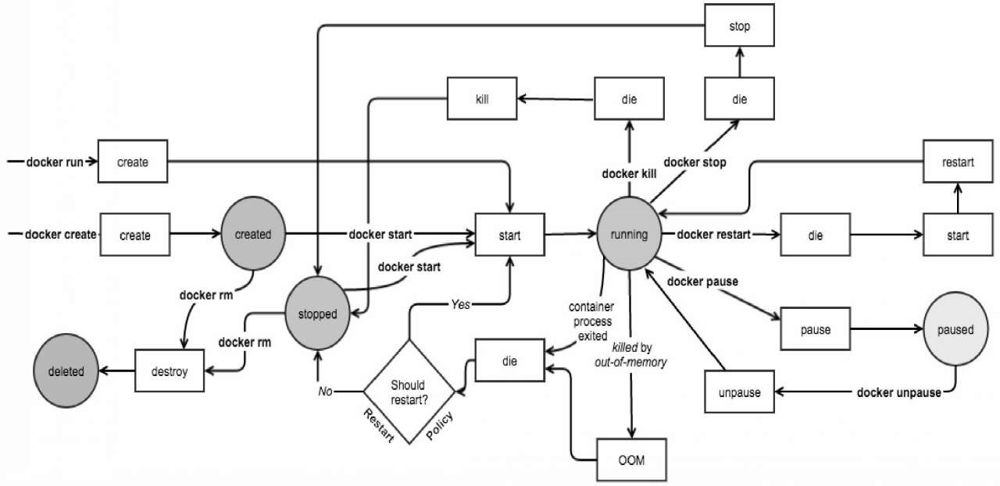

Docker 能做什么
以前学习的时候，想要搭建一个Hadoop集群，那就要安装一个VMWare，然后装至少三个虚拟机。每个虚拟机至少20GB以上，有了Docker，你只需要安装一台虚拟机（Linux操作系统），在这台虚拟机上启动多个Docker容器，每个容器只有几百兆。
Docker将硬件要求和应用环境之间进一步解耦，大大提升了程序🐒的生产力和幸福指数。
Docker的应用场景包括但不限于：
- 本地依赖：快速尝试开源项目而不用操心环境配置。
- 搭建环境：同一个Docker配置可以在不同的环境中运行。
- 微服务
- 扩容：Docker支持水平扩容。
- ……
Docker和虚拟机技术的比较
自己查。
Docker核心组件
- Docker客户端：Client
- Docker服务器：Docker daemon
- Docker镜像：Image
- Registry
- Docker容器：Container

客户端
Docker客户端是执行Docker命令的地方。docker run等等
Docker客户端也支持REST API
服务器
Docker daemon运行在Docker host上，负责创建、运行、监控容器，构建、存储镜像。
Docker服务器默认情况下只响应来自本地Host的客户端请求，如果要允许远程客户端请求，则需要修改配置（Google）
Docker镜像
Docker镜像看成只读模板，通过它可以创建Docker容器。
例如某个镜像可能包含一个操作系统、一个Apache HTTP Server以及用户开发的Web应用。
镜像有多种生成方法：（1）从无到有开始创建镜像；（2）下载并使用别人创建好的现成的镜像；（3）在现有镜像上创建新的镜像。可以将镜像的内容和创建步骤描述在一个文本文件（Dockerfile）中，通过执行dockerbuild 命令可以构建出Docker镜像，后面讨论。
Docker 容器
Docker容器就是Docker镜像的运行实例。
如果镜像是软件生命周期的构建和打包阶段，那么容器则是启动和运行阶段。（类似于程序与线程的关系。）
Registry
Registry是存放Docker镜像的仓库。
hello-word
本节介绍Docker安装到运行一个Container的基本流程。
安装
官方安装脚本自动安装 |
启动Docker服务器
systemctl start docker |
拉取hello-world镜像
docker pull hello-world |
查看image信息
[root@hadoop01 ~]# docker images hello-world |
运行hello-world
[root@hadoop01 ~]# docker run hello-world |
查看Dockerfile
FROM scratch |
只有短短三条指令。
- FROM scratch：镜像是从白手起家，从0开始构建。
- COPY hello/：将宿主机上的文件“hello”复制到镜像的根目录。
- CMD[“/hello”]：容器启动时，执行/hello。
Image
base 镜像
hello-world虽然是一个完整的镜像，但它并没有什么实际用途。通常来说，我们希望镜像能提供一个基本的操作系统环境，用户可以根据需要安装和配置软件。这样的镜像我们称作base镜像。
base镜像有两层含义：（1）不依赖其他镜像，从scratch构建；（2）其他镜像可以以之为基础进行扩展。
能称作base镜像的通常都是各种Linux发行版的Docker镜像，比如Ubuntu、Debian、CentOS等。
我们尝试下载并查看centos的镜像：
[root@hadoop01 ~]# docker pull centos |
为什么一个centos镜像只有200MB？
答：Linux操作系统由内核空间（bootfs/kernel）和用户空间（rootfs）组成。
Linux刚启动时会加载bootfs文件系统，之后bootfs会被卸载掉。
用户空间的文件系统是rootfs，包含我们熟悉的/dev、/proc、/bin等目录。对于base镜像来说，底层直接用Host的kernel，自己只需要提供rootfs就行了。而对于一个精简的OS, rootfs可以很小，只需要包括最基本的命令、工具和程序库就可以了。
因此，base镜像只是在用户空间与发行版一致，kernel版本与发行版是不同的。镜像的Kernel版本取决于Docker Host（Docker装在哪台机器上，这台机器就是Docker Host）。所以容器只能使用Host的kernel，并且不能修改
base镜像提供的是最小安装的Linux发行版。
镜像分层
我们拿一个Dockerfile来举例：
FROM debian |
上述构建过程如图所示：

可以看到，新镜像是从base镜像一层一层叠加生成的。每安装一个软件，就在现有镜像的基础上增加一层。
为什么Docker镜像要采用这种分层结构呢？
- 最大的一个好处就是：共享资源。比如：有多个镜像都从相同的base镜像构建而来，那么Docker Host只需在磁盘上保存一份base镜像；同时内存中也只需加载一份base镜像，就可以为所有容器服务了，而且镜像的每一层都可以被共享，我们将在后面更深入地讨论这个特性。
如果多个容器共享一份基础镜像，当某个容器修改了基础镜像的内容，比如/etc下的文件，这时其他容器的 /etc是否也会被修改？
- 答案是不会！修改会被限制在单个容器内。这就是我们接下来要学习的容器Copy-on-Write特性。
Copy-on-Write特性
对于Dockerfile的每一行构建语句都会增加一层镜像，而当容器启动时，一个新的可写层被加载到镜像的顶部。这是特殊的一层，这一层通常被称作“容器层”，“容器层”之下的都叫“镜像层”。所有对容器的改动，无论添加、删除，还是修改文件都只会发生在容器层中。只有容器层是可写的，容器层下面的所有镜像层都是只读的。
- 添加文件。在容器中创建文件时，新文件被添加到容器层中。
- 读取文件。在容器中读取某个文件时，Docker会从上往下依次在各镜像层中查找此文件。一旦找到，打开并读入内存。
- 修改文件。在容器中修改已存在的文件时，Docker会从上往下依次在各镜像层中查找此文件。一旦找到，立即将其复制到容器层，然后修改之。
- 删除文件。在容器中删除文件时，Docker也是从上往下依次在镜像层中查找此文件。找到后，会在容器层中记录下此删除操作。
只有当需要修改时才复制一份数据，这种特性被称作Copy-on-Write。可见，容器层保存的是镜像变化的部分，不会对镜像本身进行任何修改。
这样就解释了我们前面提出的问题：容器层记录对镜像的修改，所有镜像层都是只读的，不会被容器修改，所以镜像可以被多个容器共享。
构建镜像
Docker提供了两种构建镜像的方法： docker commit命令与Dockerfile构建文件。
docker commit（不推荐）
docker commit命令是创建新镜像最直观的方法，其过程包含三个步骤：运行容器。修改容器。将容器保存为新的镜像。
下面的例子将在CentOS base镜像中安装vim并保存为新镜像：
docker run -it ubuntu # 启动Container并进入容器 |
在新窗口使用命令查看容器：
[root@hadoop01 ~]# docker ps |
frosty_kowalevski是Docker为我们的容器随机分配的名字。
执行docker commit命令将容器保存为镜像，然后查看镜像
[root@hadoop01 ~]# docker commit frosty_kowalevski centos_test |
以上演示了如何用docker commit创建新镜像。然而，Docker并不建议用户通过这种方式构建镜像。原因如下：
- 这是一种手工创建镜像的方式，容易出错，效率低且可重复性弱。比如要在debian base镜像中也加入vi，还得重复前面的所有步骤。
- 更重要的：使用者并不知道镜像是如何创建出来的，里面是否有恶意程序。也就是说无法对镜像进行审计，存在安全隐患。
既然docker commit不是推荐的方法，我们为什么还要花时间学习呢？原因是：即便是用Dockerfile（推荐方法）构建镜像，底层也是docker commit一层一层构建新镜像的。学习docker commit能够帮助我们更加深入地理解构建过程和镜像的分层结构。
Dockerfile
使用Dockerfile创建上一节的centos_test镜像
编辑Dockerfile文件
创建一个Dockerfile，内容为
FROM centos:7.2.1511 |
注意这里
-y必须加，否则在执行yum install时，很可能因为需要用户输入yes而失败
执行build命令，并进行分析：
[root@hadoop01 docker]# pwd |
- 第三行显示文件夹下的所有文件，这里只有我们编写好的Dockerfile，值得注意的是，文件名必须叫“Dockerfile”否则执行docker build时会显示文件不存在。
- 第五行执行docker build命令，-t参数指定了镜像的名字，最后的点表示指定docker context为当前目录。
- 关于docker context：Docker默认会从build context中查找Dockerfile文件；Docker将build context中的所有文件发送给Docker daemon；Dockerfile中的ADD、COPY等命令可以将build context中的文件添加到镜像。因此不要在docker context加入不需要的文件。
- 第7到14行显示了执行docker build的具体过程。
构建好的镜像可以通过docker history命令查看构建过程：
[root@hadoop01 docker]# docker history centos-vim-dockerfile-image:latest |
镜像的缓存特性
Docker会缓存已有镜像的镜像层，构建新镜像时，如果某镜像层已经存在，就直接使用，无须重新创建。
例如在之前的Dockerfile中加入一行：
FROM centos:7.2.1511 |
则在执行的过程中，之前已经运行过相同的RUN指令，这次直接使用缓存中的镜像层
Dockerfile构建过程
总结一下通过Dockerfile构建镜像的过程：
- 从base镜像运行一个容器。
- 执行一条指令，对容器做修改。
- 执行类似docker commit的操作，生成一个新的镜像层。
- Docker再基于刚刚提交的镜像运行一个新容器。
- 重复2～4步，直到Dockerfile中的所有指令执行完毕。
从这个过程可以看出，如果Dockerfile由于某种原因执行到某个指令失败了，我们也将能够得到前一个指令成功执行构建出的镜像，这对调试Dockerfile非常有帮助。
调试Dockerfile
一句话概括就是：启动失败的前一层构建成功镜像的容器，进入容器，执行失败的语句，从而查看问题所在。
分发镜像
docker tag
这里注意tag为lastest，注意docker tag的合并方式。
使用公共的Registry
看官方文档去。
Container
运行容器的三种方法
- CMD指令
- ENTRYPOINT指令
- 在docker run命令行中指定，例如，
docker run ubuntu pwd
长期运行容器
容器在执行完启动时的指令后就会退出。想要让容器保持运行状态，那运行的命令不退出就好了。。
进入容器
在容器running时，我们可以进入容器work，有两种方法，
- docker attach
- docker exec
详细见常用命令总结章节
docker attach和docker exec区别：
- attach直接进入容器启动命令的终端，不会启动新的进程。
- exec则是在容器中打开新的终端，并且可以启动新的进程。
- 如果想直接在终端中查看启动命令的输出，用attach；其他情况使用exec。
docker start/stop/restart
容器在docker host中实际上是一个进程，通过docker start/stop/restart <container id>命令启动，停止和重启容器。
docker pause/unpause
通过docker pause/unpause <container id>命令暂停和恢复容器。
docker rm
通过docker rm <container id>命令删除容器。
docker生命周期

资源限制
一个docker host 会运行若干容器，对于容器，Docker也提供了类似的机制避免某个容器因占用太多资源而影响其他容器乃至整个host的性能。
docker 提供命令以限制容器的内存，CPU，BlockIO（磁盘读写）等。
具体请查阅相关资料。
实现容器的底层技术
cgroup和namespace是最重要的两种技术。cgroup实现资源限额，namespace实现资源隔离。
Linux使用了6种namespace，分别对应6种资源：Mount、UTS、IPC、PID、Network和User。
具体用到再说。
Docker 网络
4种网络：
- none：封闭网络，对安全性要求高并且不需要联网的应用可以使用none网络。
- host： 连接到host网络的容器共享Docker host的网络栈，容器的网络配置与host完全一样。可以通过 —network=host指定使用host网络。
- bridge：Docker安装时会创建一个命名为docker0的Linuxbridge。如果不指定—network，创建的容器默认都会挂到docker0上。
- user-defined：除了none、host、bridge这三个自动创建的网络，用户也可以根据业务需要创建user-defined网络。
容器间通信
待补充
将容器与外部世界连接
待补充
Docker 存储
待补充
常用命令总结
Docker镜像
docker images
列出镜像
docker images [OPTIONS] [REPOSITORY[:TAG]]
OPTIONS说明：
- -a :列出本地所有的镜像（含中间映像层，默认情况下，过滤掉中间映像层）；
docker rmi
docker rmi [OPTIONS] IMAGE [IMAGE...]
删除本地镜像
docker build
使用 Dockerfile 创建镜像。
docker build [OPTIONS] PATH | URL | -
OPTIONS说明：
- —build-arg=[] :设置镜像创建时的变量；
- —cpu-shares :设置 cpu 使用权重；
- -f :指定要使用的Dockerfile路径；
- —force-rm :设置镜像过程中删除中间容器；
- —isolation :使用容器隔离技术；
- -m :设置内存最大值；
- —memory-swap :设置Swap的最大值为内存+swap，”-1”表示不限swap；
- —no-cache :创建镜像的过程不使用缓存；
- —pull :尝试去更新镜像的新版本；
- —quiet, -q :安静模式，成功后只输出镜像 ID；
- —rm :设置镜像成功后删除中间容器；
- —tag, -t: 镜像的名字及标签，通常 name:tag 或者 name 格式；可以在一次构建中为一个镜像设置多个标签。
- —network: 默认 default。在构建期间设置RUN指令的网络模式
docker history
查看指定镜像的创建历史。
docker history [OPTIONS] IMAGE
docker login
登陆到一个Docker镜像仓库，如果未指定镜像仓库地址，默认为官方仓库 Docker Hub
docker pull
拉取镜像
docker push
推送镜像
docker search
查找镜像
Docker 容器
docker run
docker run ：创建一个新的容器并运行一个命令
docker run [OPTIONS] IMAGE [COMMAND] [ARG...]
OPTIONS说明：
- -d: 后台运行容器，并返回容器ID；
- -i: 以交互模式运行容器，通常与 -t 同时使用；
- -p: 指定端口映射，格式为：主机(宿主)端口:容器端口
- -t: 为容器重新分配一个伪输入终端，通常与 -i 同时使用；
- —name=”nginx-lb”: 为容器指定一个名称；
- —dns 8.8.8.8: 指定容器使用的DNS服务器，默认和宿主一致；
- —dns-search example.com: 指定容器DNS搜索域名，默认和宿主一致；
- -h “mars”: 指定容器的hostname；
- -e username=”ritchie”: 设置环境变量；
- -m :设置容器使用内存最大值；
- —net=”bridge”: 指定容器的网络连接类型，支持 bridge/host/none/container: 四种类型；
- —expose=[]: 开放一个端口或一组端口；
docker start/stop/restart
docker start :启动一个或多个已经被停止的容器
docker stop :停止一个运行中的容器
docker restart :重启容器
docker rm
docker rm ：删除一个或多个容器。
docker pause/unpause
docker pause :暂停容器中所有的进程。
docker unpause :恢复容器中所有的进程。
docker create
docker create ：创建一个新的容器但不启动它；用法同docker run
docker attach
docker attach :连接到正在运行中的容器。
要attach上去的容器必须正在运行，可以同时连接上同一个container来共享屏幕（与screen命令的attach类似）。
docker exec
docker exec ：在运行的容器中执行命令
docker exec [OPTIONS] CONTAINER COMMAND [ARG...]
OPTIONS说明：
- -d :分离模式: 在后台运行
- -t :分配一个伪终端
docker ps
列出容器
docker ps [OPTIONS]
OPTIONS说明：
- -a :显示所有的容器，包括未运行的。
- -n :列出最近创建的n个容器。
- -q :静默模式，只显示容器编号。
docker inspect
docker inspect : 获取容器/镜像的元数据。
docker top
查看容器中运行的进程信息，支持 ps 命令参数。
容器运行时不一定有/bin/bash终端来交互执行top命令，而且容器还不一定有top命令，可以使用docker top来实现查看container中正在运行的进程。
docker logs
获取容器的日志
docker commit
从容器创建一个新的镜像。
docker commit [OPTIONS] CONTAINER [REPOSITORY[:TAG]]
OPTIONS说明：
- -a :提交的镜像作者；
- -c :使用Dockerfile指令来创建镜像；
- -m :提交时的说明文字；
- -p :在commit时，将容器暂停。
docker cp
用于容器与主机之间的数据拷贝。
例如：将主机/www/runoob目录拷贝到容器96f7f14e99ab的/www目录下。
docker cp /www/runoob 96f7f14e99ab:/www/ |
Dockerfile
- FROM指定base镜像。
- MAINTAINER设置镜像的作者，可以是任意字符串。
- COPY将文件从build context复制到镜像。COPY支持两种形式： COPY src dest与COPY [“src”, “dest”]。注意：src只能指定build context中的文件或目录。
- ADD与COPY类似，从build context复制文件到镜像。不同的是，如果src是归档文件（tar、zip、tgz、xz等），文件会被自动解压到dest。
- ENV设置环境变量，环境变量可被后面的指令使用。
- EXPOSE指定容器中的进程会监听某个端口，Docker可以将该端口暴露出来。我们会在容器网络部分详细讨论。
- VOLUME将文件或目录声明为volume。我们会在容器存储部分详细讨论。
- WORKDIR为后面的RUN、CMD、ENTRYPOINT、ADD或COPY指令设置镜像中的当前工作目录。
- RUN在容器中运行指定的命令。
- CMD容器启动时运行指定的命令。Dockerfile中可以有多个CMD指令，但只有最后一个生效。CMD可以被dockerrun之后的参数替换。
- ENTRYPOINT设置容器启动时运行的命令。Dockerfile中可以有多个ENTRYPOINT指令，但只有最后一个生效。CMD或docker run之后的参数会被当作参数传递给ENTRYPOINT。
RUN vs CMD vs ENTRYPOINT
略
参考资料
- 《每天五分钟玩转Docker容器技术》